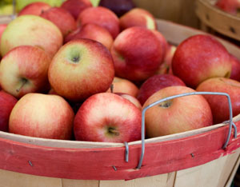

It’s been known for years that organic farming is better for the environment than conventional growing methods. But a recent Washington State study has found that organic farming also can produce better-tasting food and be better for the farmer’s pocketbook.
“Our results show that organic apple production systems in Washington State are not only better for the soil and the environment than their conventional counterpart but also produce comparable yields, higher profits and greater energy efficiency,” the report by four Washington State researchers said.
The organic apples were sweeter and as firm or firmer than fruit from conventional systems. Organic methods also left the soil in better shape than conventional methods and had fewer potential negative impacts on the environment than conventional systems. The results of the six-year study were published in the April 19 issue of the prestigious journal Nature.
Researchers used compost and foliar sprays for fertilizers, and a combination of bark mulch, landscaping, cultivation and mowing for weed control on the test plot. Pest control was achieved by disrupting mating, which prevents worm infestations without hurting the environment or affecting apple trees.
Tree growth and cumulative yields were similar in all three test plots, but for two years the organic plot produced smaller apples than the others.
“Although crop yield and quality are important products of a farming system, the benefits of better soil and environmental quality provided by the organic systems are equally valuable and usually overlooked in the marketplace,” the report said.
Researcher John Reganold said the study has continued into its eighth growing season. Among other aspects, the researchers are studying whether the water content differs between organic and conventional apples.
|
 PHOTO: ISTOCKPHOTO/JOE BIAFORE Organic apple-growing methods leave soil in better shape and has fewer potential negative impacts on the environment than conventional growing methods do. |
|
|